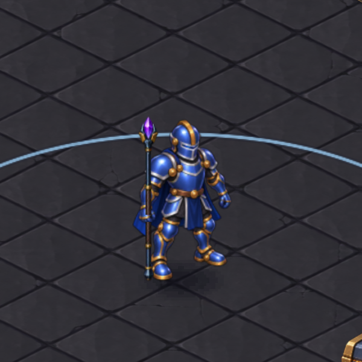
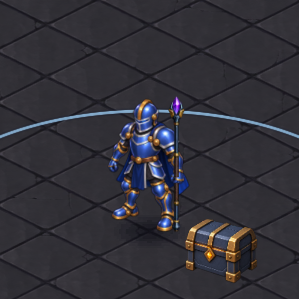
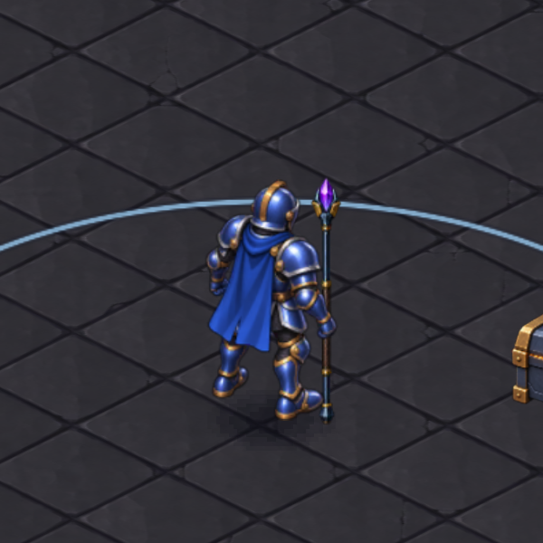
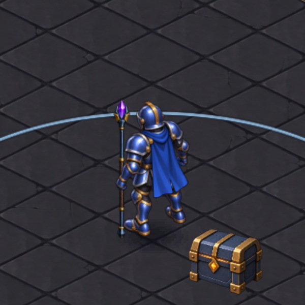
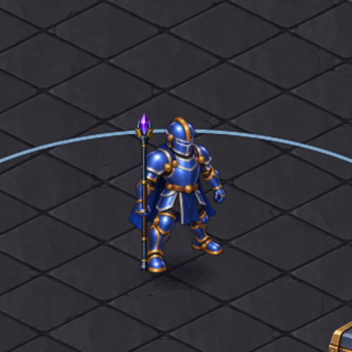
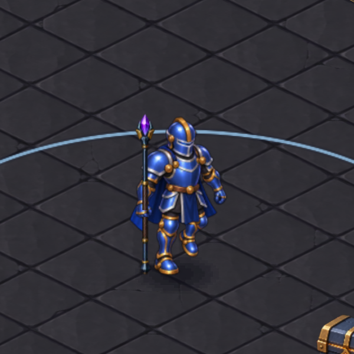
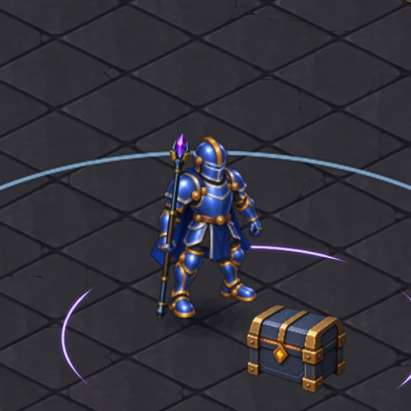
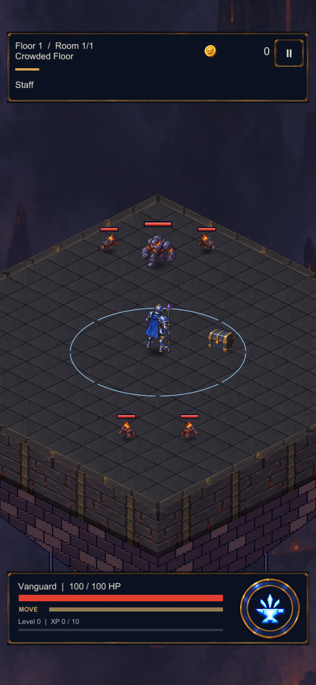

Gerçek oyun sahnesinden alınan görüntüler. Asa, aynı el noktasını izliyor; önden parmakların altında, arkadan gövdenin arkasında çiziliyor. Kristal asanın parçası; eski ayrı küre gizli. Saldırıda mevcut eğilme hareketi korunuyor.








Kaynak görselin aynalanması ayrı bir arka yüz çizimi değildir. Kristalin kendi aydınlık yüzeyleri korunur; eski kürenin ayrı parlama değişimi kullanılmaz.
Doğrulama ve entegrasyon notları